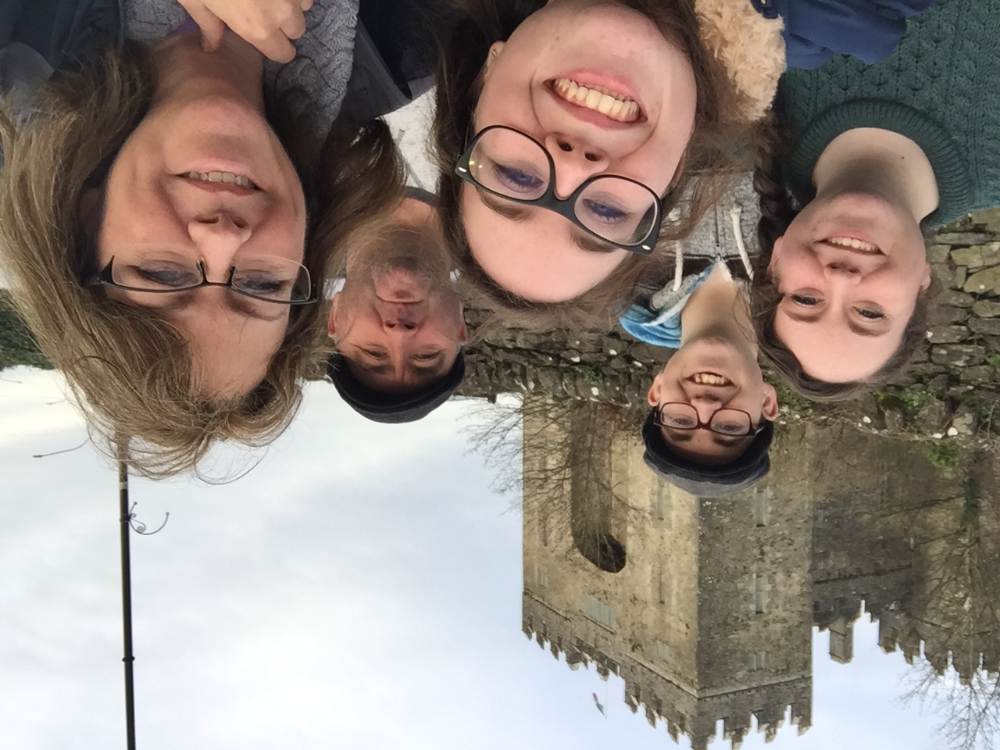
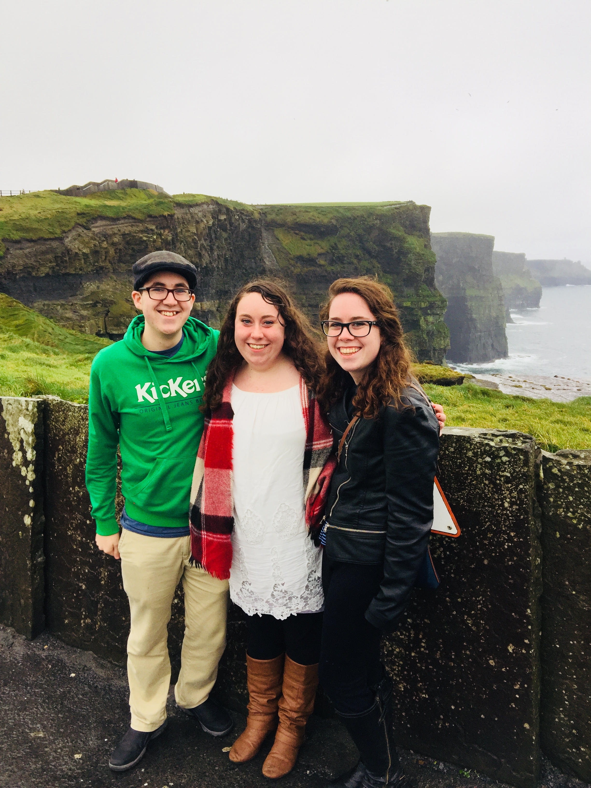

My dad was born and raised in County Clare, Ireland.
He met my mom after he came to America which makes me 1st Generation Irish-American.
Located in County Clare, Ireland, the Cliffs of Moher is a very popular tourist destination.
There is plenty to do and see such as visiting the museum and learning about the history of the Cliffs, taking a walk to O'Brien's Tower, & taking pictures with your friends and family with the Cliffs in the background.
**NOTE: I can't fix the weird positioning on the images on desktop. It works fine on mobile though.**
My family and I went to Ireland in November of 2017 to visit with my dad's side of the family and tour the country.
 Driving is swapped in Ireland so I was super disoriented when we got into the car.

Most Irish music tells a story or is really fun to listen to.
C'est La Vie - B*Witched
Galway Girl - The High Kings
Nancy Mulligan - Ed Sheeran
This song is told in the perspective of Ed Sheeran's Grandfather as he recalls how he fell in love with his wife, Nancy Mulligan.